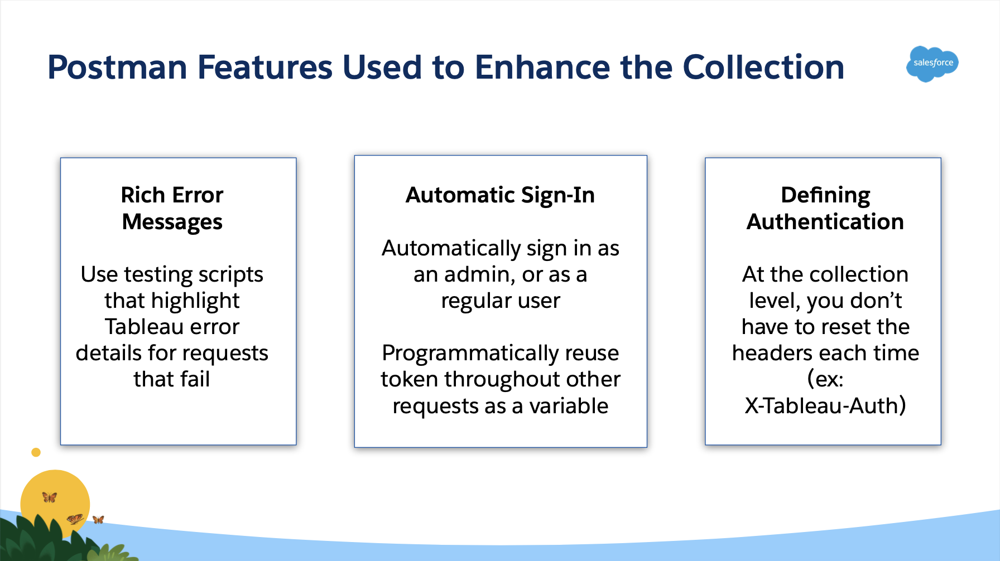
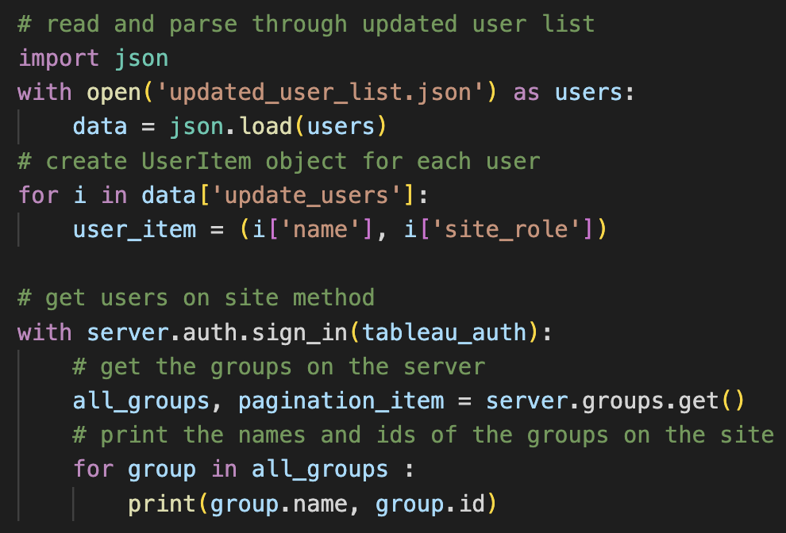
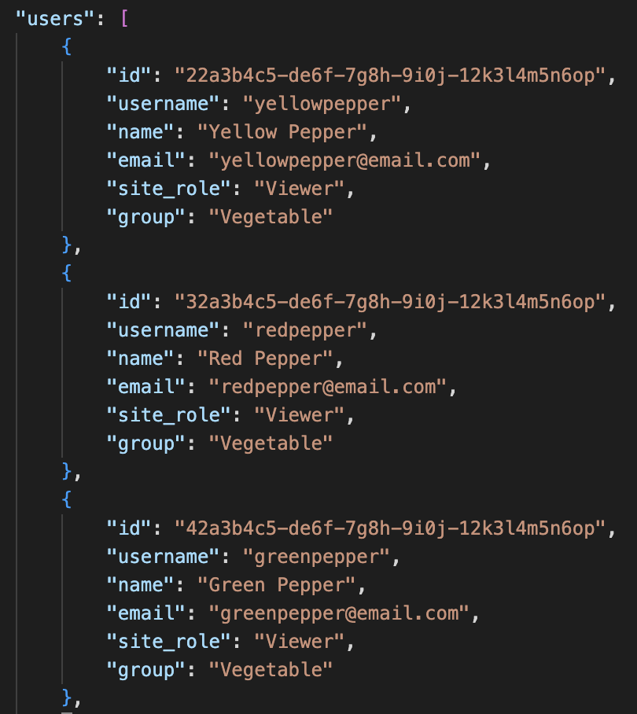
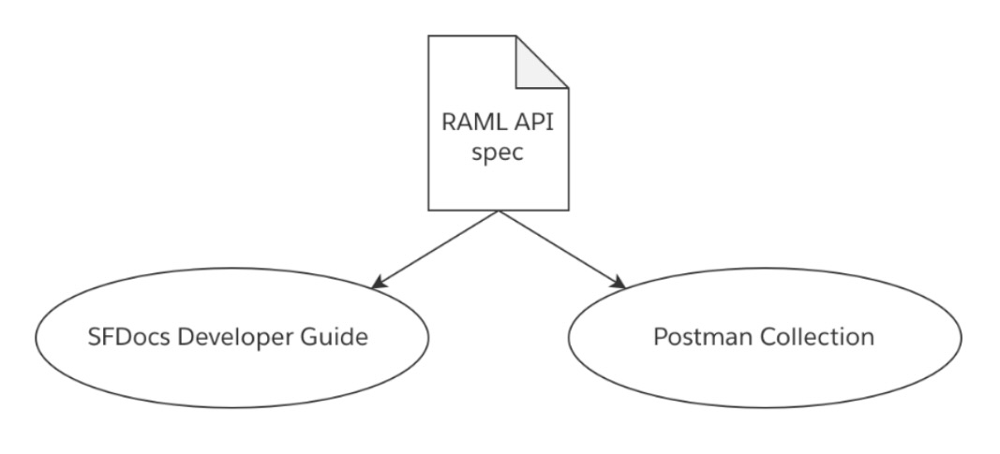
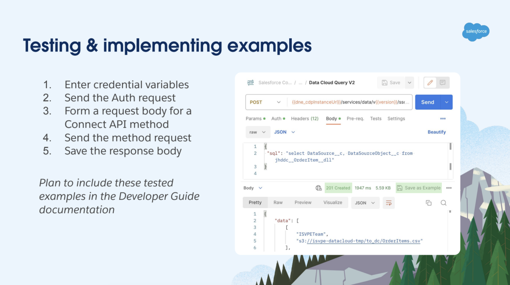

Professional Work


Technical Writing Intern for Tableau, Summer 2022.
Technical Writing Intern for Salesforce, Summer 2023.
Technical Writing Analyst for Salesforce, full-time starting March 2024.
Tableau REST API Improvement Plan
Improvement plan for the Tableau Help site to update REST API methods. I collaborated with the Developer Documentation team to create a template, test new revisions, and build code to the Help site.
Documented the process using MadCap Flare software with formats in HTML, XML, and JSON.
Visit the Tableau Help page link to see an endpoint I implemented for publishing a data point.
Tableau Open-Source Postman Collection & Environment
Postman is a platform used to send and test API requests. I collaborated with the Solutions Engineering team to test new innovations. Features included: automatic sign-in, error details highlighting, and resuable authentication variables.

Presented to my internal team about my findings during testing, future goals for the Postman collection, and the efficiency of using the API platform.
Tableau User Management Walkthrough
Walkthrough that covers the basics of using Tableau REST API to manage users and groups. Created a procedural document guiding the user
through making direct requests using python, and using the Tableau Server Client (TSC), a open-source python wrapper for the REST API supported by Tableau.
Site administrators can use supplemental files with code scripts to see the process of provisioning users.
JSON files with example user information is provided to run these scripts successfully.



Salesforce Data Cloud Connect API Uplift
Problem:
The existing Data Cloud Connect API Postman Collection was out-of-date and had not been tested for functionality in years. Related online documentation was also out-of-date and out-of-sync with the content in the Postman Collection. Providing a solution for both documentation and a collection that are in-sync has the potential to impact adoption and implementation speed for Data Cloud APIs.
Solution:
The single sourcing process involves one, "single" API file that is used to publish both the Postman Collection and the online documentation. This completely eliminates the issue of one of the two aspects being out-of-date if they’re both generated from the same file. This also makes the APIs more easily maintainable since only one writer can own the single file.

Process:
- SFDocs Developer Guide: After receiving a RAML API spec from the UI SDK team, I made significant edits to make the SFDocs pages more user friendly. Apart from editing the reference material, I wrote content for other pages on the SFDocs build, like the Overview and Guides pages. The Guides page includes a section about using the Postman Collection, with instructions on installing the collection and setting up the environment.
- Postman Collection: The Connect API Postman Collection is automatically generated from the API spec, simply by importing the RAML file. After sending an authentication request to your org, important URL variables are stored in your workplace environment to use in the rest of your calls. Providing customers with tested, usable examples makes their experience using the collection much simpler.
Visit the link to the Connect API Documentation below. Select "Reference" and "Data Cloud Connect API" to view the reference material.
Testing:
With access to an org with admin credentials and existing sample data, I began testing each Connect API endpoint. I documented each request and response I received for both successful and unsuccessful API calls. Eventually, I identified 6 out of 34 APIs that did not work. I was able to report these impracticalities to our developers.

See the collection live from Salesforce Developers on Postman below.
Salesforce Technical Writing Analyst
I began full-time employment at Salesforce in March of 2024. I joined the Self Service and Growth Team, working on documentation, content design, and more. My team is covers the Starter and Pro Suite editions for Salesforce, which provide a simplified
experience for customer relations management.
Learn more about Salesforce Starter and Pro Suite at the link below.